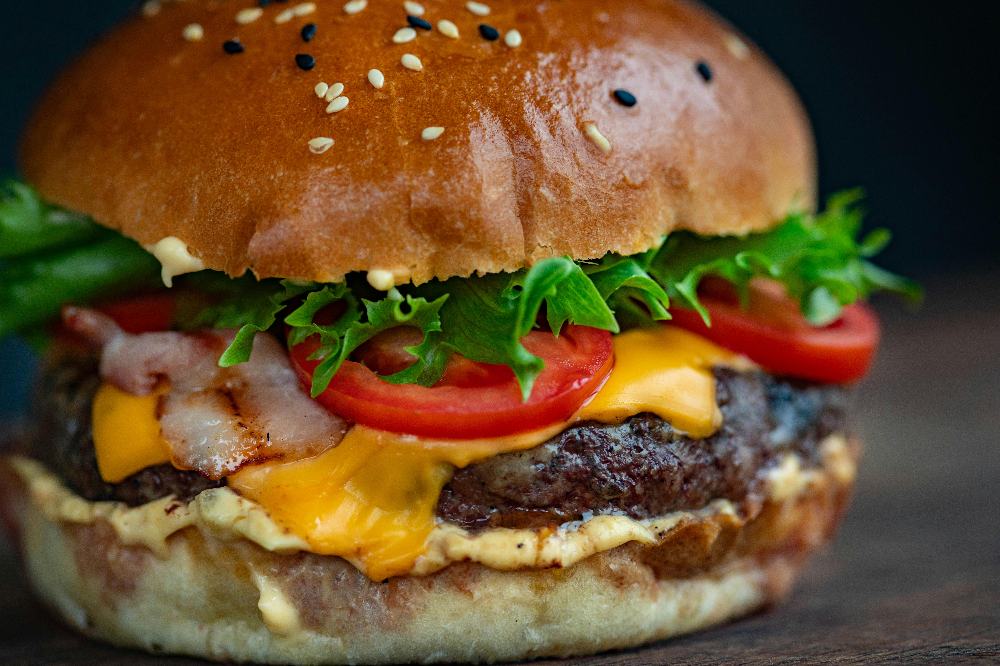

<!DOCTYPE html>
<html lang="en">
    <head>
        <meta charset="UTF-8">
        <title>Smash Burger Recipe</title>
    </head>
</html>

<body>
    <h1>Smash Burger Recipe with Easy Sauce</h1>
    
    <p>A homemade Smash Burger is quick and easy to make. These fly off the grill in minutes so it’s a great way to feed a crowd.</p>

    <p>Smash burgers have the iconic flavor profile of classic Burgers,</p> <p>but that double burger patty with cheese melted in between is irresistible and you’ll love the special sauce.</p>

    <h2>Ingredients</h2>
    <h5><strong>Smash Burger Patties:</strong></h5>
    <ul>
        <li>1 1/2 lbs ground beef, 80/20, divided into 8 portions (3oz each)</li>
        <li>Salt, added to taste</li>
        <li>Black Pepper, added to taste</li>
        <li>Garlic powder, optional, added to taste</li>
        <li>4 slices medium cheddar cheese, we love thick-sliced</li>
    </ul>

    <h5><strong>Burger Sauce:</strong></h5>
    <ul>
        <li>1/3 cup mayonnaise</li>
        <li>1 tsp yellow mustard</li>
    </ul>

    <h5><strong>Toppings:</strong></h5>
    <ul>
        <li>4 burger buns, we used brioche buns</li>
        <li>2 cups iceberg lettuce, shredded</li>
        <li>1 large tomato, sliced</li>
        <li>1/2 red onion, sliced into thin rings</li>
        <li>2 Dill Pickles, cut into 12 slices</li>
    </ul>

    <h2>Instructions</h2>
    <h5><strong>Portion Beef Patties:</strong></h5>
    <ol>
        <p><li>Divide beef into 8 even portions, about 3 oz each.</p> <p>Loosely Roll them into balls then cover and refrigerate while preparing remaining ingredients.</p> The meat must be cold when it hits the grill.</li></p>
    </ol>
    
    <h5><strong>Prep Toppings and Buns:</strong></h5>
    <ol>
        <p><li>Remove wilted leaves from lettuce to keep it crunchy then finely shred lettuce. Slice tomatoes, onions, and pickles.</li></p>
           <p><li>Butter and toast buns over medium heat until golden on the buttered side.</li></p>
    </ol>

    <h5><strong>Cook the Patties:</strong></h5>
    <ol>
        <p><li>Increase griddle to medium/high heat. Place 2-4 burger balls onto hot griddle.</p> <p>Working quickly, place parchment paper over the meat and firmly smash straight down into a thin patty.</li></p>
        <p><li>Once patties are smashed, peel back and discard parchment papers and season patties with salt, pepper and garlic powder.</p> <p>Add 1/2 teaspoon of burger sauce. Cook 2 minutes on the first side or until seared and juices start to come to the surface.</li></p>
        <p><li>Scrape under the burger with spatula facing down at a 45˚ angle to get under the caramelized part and flip. Cook another 1 minute.</p> <p>Top half of the patties with sliced cheese and cover cheese with the second patty. Repeat with remaining burgers and transfer them to a platter as they finish cooking.</li></p>
    </ol>

    <h5><strong>Assemble Burgers:</strong></h5>
    <ol>
        <p><li>Place sauce on bottom of bun. Top with 3 pickle slices, shredded lettuce, 2 tomato slices and thin sliced onion.</p> <p>Add double patty and top with bun.</li></p>
    </ol>
    
</body>

<a href="../index.html">Go back to home page</a>